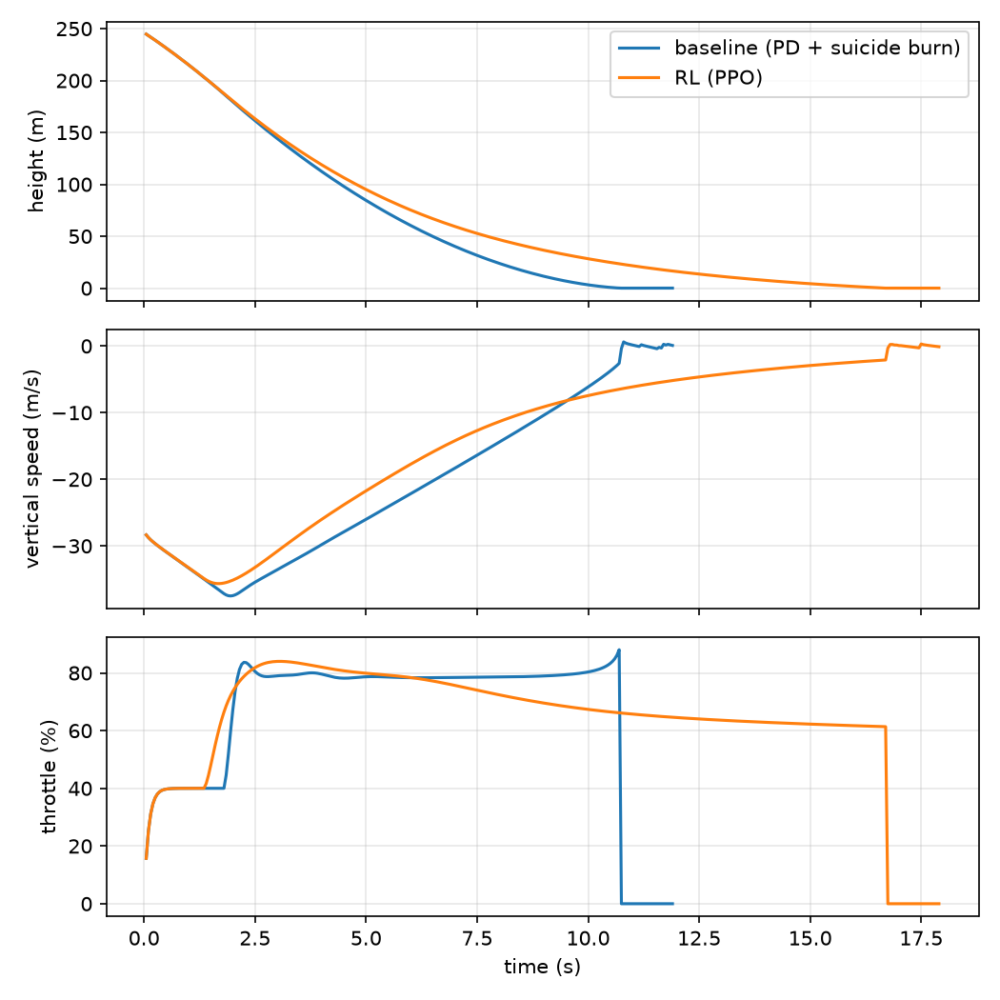
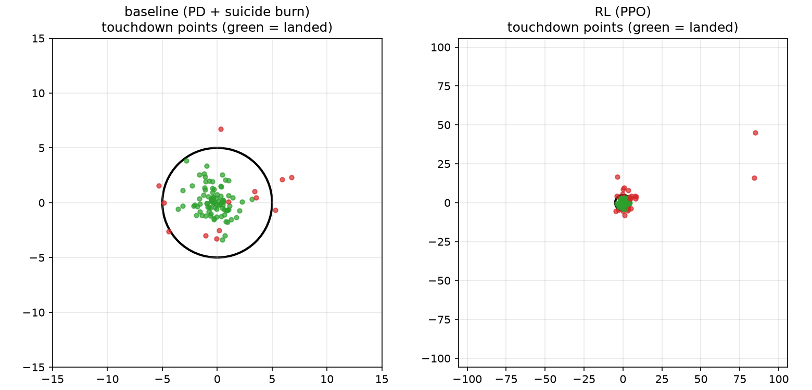

Learning to Land a Rocket
A custom 6-DoF MuJoCo rocket with gimballed, pressure-dependent thrust and real landing-leg contact. A PPO policy starts out falling and crashing, and learns to land on a 5 m pad, in wind, from raw state.
One policy, shown at checkpoints from 0 to 6M training steps. Same starting conditions in every clip.
The 76% success rate is from the best checkpoint. The clips use the final checkpoint, which lands about 60% of the time at full difficulty, and the seeds shown were chosen because the final policy lands on them.
Learning timeline
The same descent, rendered from checkpoints through training. Early policies fall and crash. Later ones brake, stay upright and touch down.
Landings
Every clip is a real simulated descent from the trained policy, with no scripted trajectories. Clips with the same seed are the same descent from a different camera. Filter by camera or seed.
Why this model
- MuJoCo, 6-DoF. Landing depends on contact: legs touching, tilt at impact, a body hit. MuJoCo models contacts and rigid-body dynamics, so a landing here is judged by physics and not by a hand-written rule.
- One learned policy. The same network handles throttle and both gimbal angles, so guidance (where to go) and control (how to hold attitude) are one map from state to action. The vehicle also gets lighter as fuel burns and the thrust changes with altitude, and a learned policy adapts to both without separate gain schedules.
- PPO. It is on-policy and stable with continuous actions, and it scales across parallel simulator copies (12 in our runs). It also pairs naturally with a curriculum. SAC is the other common choice for this kind of task. We did not compare against it, so we make no claim about which is better.
- Curriculum and randomisation. Starting at full difficulty gave almost no successful landings to learn from. We start easy and tighten offsets, wind and the pad as the policy improves.
The task
One policy sees the state and outputs throttle and two gimbal angles, so guidance and control are a single learned map.
- Observation: 19 numbers (position, velocity, attitude, angular rate, fuel fraction).
- Action: throttle and two gimbal angles, each in [-1, 1].
- Success: inside the 5 m pad, touchdown speed under 3 m/s, small tilt, no body contact.
- Curriculum: difficulty rises from 0.1 to 1.0 (offsets, wind, tighter pad) as the success rate passes 70%.
The mathematics
The policy πθ maps the 19-number observation to three commands. The thrust vector tilts with the gimbal, and its direction, magnitude and the vehicle mass all change in flight.
Action and engine.
throttle command τcmd = τmin + (1 − τmin)(a0 + 1)/2
engine lag τ ← τ + (1 − e−Δt/Tτ)(τcmd − τ)
gimbal angles (δx, δy) = (a1, a2) · δmax
Dynamics. The thrust depends on altitude through ambient pressure, and propellant burns in proportion to thrust.
ṁ = −τ Tvac / (Isp g0)
m v̇ = m g + R(q) Fthrust(T, δ) + Faero(v − vwind) + Fcontact
I ω̇ = −ω × Iω + re × Fthrust + τaero + τcontact
I = diag(Ixx, Ixx, ½ m r²), Ixx = m (3r² + L²)/12 (recomputed as fuel burns)
Drag uses the air-relative velocity: axial drag ½ρCDA|vz|vz plus cross-flow drag acting at a centre of pressure above the centre of mass, with ρ = ρ0 e−h/H. Wind is a constant horizontal vector for each episode, with each component drawn up to the wind limit. There are no gusts and no sensor noise. Contact forces on the legs and body come from MuJoCo's contact solver. Touchdown starts a short settle phase with the engine cut, and success is judged at the end of it.
Reward. In flight the reward is the change in a shaping potential, minus a small throttle cost, and leaving the arena costs 100 more:
Φ = −( 100 ‖pxy‖/200 · (1 + 4 e−h/40) + 100 h/200 + 100 ‖v − vref‖/30 + 50 θtilt + 10 ‖ω‖ )
vref,z = −min(0.9 √(2·3·h) + 0.3, 30), vref,xy = clip(−0.12 pxy, ±4)
At the end of the episode:
failure: r = −min(100, 15 + Σi wi clip(ei − 1, 0, 2) + 15 clip(d/5 − 1, 0, 4) + 30·[body hit])
Here d is the miss distance from the pad centre and ei is how far each landing condition (vertical speed, sideways speed, tilt, final tilt, miss, final speed) is past its limit, with ei = 1 at the limit. The 40 e−d/5 term is the centring bonus. Without it, a landing 9 m off the pad and one 0.5 m off paid the same, and training stalled at about 10 m of miss.
Learning and curriculum.
difficulty d ← d + 0.1 when success rate over the last 100 episodes ≥ 70%, d ∈ [0.1, 1]
pad tolerance rpad = 5 m · (2 − t), t = (d − 0.1)/0.9 (10 m at d = 0.1, 5 m at d = 1)
Policy and value networks are [256, 256] MLPs. Every episode randomises the start height, offset, entry velocity, tilt and yaw, plus dry mass (±10%), propellant (−15% to 0), thrust (±5%), Isp (±3%) and drag (±20%). Start conditions and wind scale up with the difficulty.
Constants: Tvac = 28 kN, Isp = 300 s, Ae = 0.05 m², τmin = 0.4, Tτ = 0.1 s, δmax = 8°, dry mass 1000 kg, propellant 300 kg, control at 20 Hz with 100 Hz physics.
What it learned
Training starts at the easiest difficulty. The policy first learns to stay upright, then to slow down, and finally to land near the pad centre. Evaluated over 100 episodes at full difficulty, it lands 76 of 100, touching down at about 1.5 m/s on average over the successful landings.
A classical guidance-and-PD controller lands this task reliably, so the task is physically feasible.
Results
Learning curve
Each checkpoint is evaluated on the same 60 seeds at full difficulty. The shaded band is a 95% interval, roughly ±12 points. Success peaks near 4.5 to 5M steps and fluctuates afterwards, so the reported results use the best checkpoint chosen by evaluation reward. Miss values above 30 m are clipped at the top of the chart.
Robustness to wind
Success rate against maximum wind speed, 50 episodes per point (bars are 95% intervals). Training randomised wind only up to about 5 m/s per axis, so the policy degrades sharply outside the range it saw. Training with a wider wind range is the obvious next step.
Where the touchdowns land
Distance of each touchdown from the pad centre, best checkpoint, 98 episodes that touched down. Most of the misses are soft landings 5 to 7 m out, just beyond the pad edge.
An example descent and the touchdown scatter


What happened in 100 evaluation episodes
Failure analysis
Most failures are near-misses that touch down softly and upright but 5 to 7 m from the pad centre, just outside the 5 m limit. A few rare episodes drift away or hit hard from high altitude. Early on, the policy had learned to land softly near the pad but not on it, because the reward gave nothing for being closer to the centre. Adding a centring bonus on success and a distance penalty on failure fixed that plateau, and the curriculum then reached full difficulty.
Reproduce
python train.py --algo ppo --steps 6000000 --envs 12 --device cpu --seed 3 --out models_story python render_checkpoints.py --ckpt-dir models_story\ckpts --difficulty 1.0 --seed 2 python evaluate.py --model models_story\best\best_model.zip --algo ppo --episodes 100
Report (PDF) · Code · Video